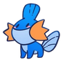

Checking the jukebox
000
Fullstack Developer & Frontend enthusiast
I architect scalable interfaces and design systems that bridge engineering precision with creative expression. Specialized in Angular, React & TypeScript.
About Me

btw, that's meFullstack Developer and Frontend enthusiast focused on front-end architecture, design systems, and interfaces that make complex workflows easier to use. I like building products where UI decisions, technical structure, and product value point in the same direction.
My current work connects product delivery with AI automation, agile routines, and tools that help teams move with more context and less friction.
Psychic-type elegance, legendary rarity — basically my design philosophy wrapped in a Pokémon.
2+
Years Exp.
10+
Projects
Front-End
Focus
2027
Graduation
An AI-powered medical platform that helps doctors make better clinical decisions — leading the team, owning the architecture, creating AI automations, and shaping agile development tools for the workflow around medical consultations.
Outside the editor
Pokemon and sharks are my main hype focus: Lugia, Gengar, and Arcanine for personality and style; whale sharks and hammerheads for calm scale, sharp silhouettes, and natural design energy.
Career Path
Jan. 2026 — Present
Promoted to Project Leader, spearheading the development of an AI-powered medical solution — leading the team, defining architecture, and owning the product from vision to deployment.
Key Achievements
Jan. 2025 — Dec. 2025
Advanced to full developer role, taking ownership of system architecture, UI/UX decisions, and cross-team technical leadership.
Key Achievements
Apr. 2024 — Dec. 2024
Started my professional journey as an intern, contributing to system development and learning industry best practices.
Key Achievements
Portfolio
Projects focused on turning complex workflows into usable products: QA traceability, scientific catalogs, interactive learning tools, and role-based mobile apps.
Oxygen
Porch Light
Change song to switch theme